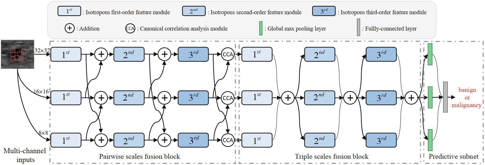

Publications and code
Publications
2021
1. Zhenyuan Ning#, Chao Tu, Xiaohui Di, Qianjin Feng, and Yu Zhang*. Deep cross-view co-regularized representation learning for glioma subtype identification. Medical Image Analysis (MedIA). [PDF]
The new subtypes of diffuse gliomas are recognized by the World Health Organization (WHO) on the basis of genotypes, e.g., isocitrate dehydrogenase and chromosome arms 1p/19q, in addition to the histologic phenotype. Glioma subtype identification can provide valid guidances for both risk-benefit assessment and clinical decision. The feature representations of gliomas in magnetic resonance imaging (MRI) have been prevalent for revealing underlying subtype status. However, since gliomas are highly heterogeneous tumors with quite variable imaging phenotypes, learning discriminative feature representations in MRI for gliomas remains challenging. In this paper, we propose a deep cross-view co-regularized representation learning framework for glioma subtype identification, in which view representation learning and multiple constraints are integrated into a unified paradigm. Specifically, we first learn latent view-specific representations based on cross-view images generated from MRI via a bi-directional mapping connecting original imaging space and latent space, and view-correlated regularizer and output-consistent regularizer in the latent space are employed to explore view correlation and derive view consistency, respectively. We further learn view-sharable representations which can explore complementary information of multiple views by projecting the view-specific representations into a holistically shared space and enhancing via adversary learning strategy. Finally, the view-specific and view-sharable representations are incorporated for identifying glioma subtype. Experimental results on multi-site datasets demonstrate the proposed method outperforms several state-of-the-art methods in detection of glioma subtype status.
2. Zhenyuan Ning#, Zehui Lin, Qing Xiao, Denghui Du, Qianjin Feng, Wufan Chen, and Yu Zhang*. Multi-Constraint Latent Representation Learning for Prognosis Analysis Using Multi-Modal Data. IEEE Transactions on Neural Network and Learning Systems (TNNLS). [PDF]

The Cox proportional hazard model has been widely applied to cancer prognosis prediction. Nowadays, multi-modal data, such as histopathological images and gene data, have advanced this field by providing histologic phenotype and genotype information. However, how to efficiently fuse and select the complementary information of high-dimensional multi-modal data remains challenging for Cox model, as it generally does not equip with feature fusion/selection mechanism. Many previous studies typically perform feature fusion/selection in the original feature space before Cox modeling. Alternatively, learning a latent shared feature space that is tailored for Cox model and simultaneously keeps sparsity is desirable. In addition, existing Cox-based models commonly pay little attention to the actual length of the observed time that may help to boost the model's performance. In this article, we propose a novel Cox-driven multi-constraint latent representation learning framework for prognosis analysis with multi-modal data. Specifically, for efficient feature fusion, a multi-modal latent space is learned via a bi-mapping approach under ranking and regression constraints. The ranking constraint utilizes the log-partial likelihood of Cox model to induce learning discriminative representations in a task-oriented manner. Meanwhile, the representations also benefit from regression constraint, which imposes the supervision of specific survival time on representation learning. To improve generalization and alleviate overfitting, we further introduce similarity and sparsity constraints to encourage extra consistency and sparseness. Extensive experiments on three datasets acquired from The Cancer Genome Atlas (TCGA) demonstrate that the proposed method is superior to state-of-the-art Cox-based models.
3. Zhenyuan Ning#, Shengzhou Zhong#, Qianjin Feng, Wufan Chen, and Yu Zhang*. SMU-Net: Saliency-guided Morphology-aware U-Net for Breast Lesion Segmentation in Ultrasound Image. IEEE Transactions on Medical Imaging (TMI). [PDF] [Code]
Deep learning methods, especially convolutional neural networks, have been successfully applied to lesion segmentation in breast ultrasound (BUS) images. However, pattern complexity and intensity similarity between the surrounding tissues (i.e., background) and lesion regions (i.e., foreground) bring challenges for lesion segmentation. Considering that such rich texture information is contained in background, very few methods have tried to explore and exploit background-salient representations for assisting foreground segmentation. Additionally, other characteristics of BUS images, i.e., 1) low-contrast appearance and blurry boundary, and 2) significant shape and position variation of lesions, also increase the difficulty in accurate lesion segmentation. In this paper, we present a saliency-guided morphology-aware U-Net (SMU-Net) for lesion segmentation in BUS images. The SMU-Net is composed of a main network with an additional middle stream and an auxiliary network. Specifically, we first propose generation of saliency maps which incorporate both low-level and high-level image structures, for foreground and background. These saliency maps are then employed to guide the main network and auxiliary network for respectively learning foreground-salient and background-salient representations. Furthermore, we devise an additional middle stream which basically consists of background-assisted fusion, shape-aware, edge-aware and position-aware units. This stream receives the coarse-to-fine representations from the main network and auxiliary network for efficiently fusing the foreground-salient and background-salient features and enhancing the ability of learning morphological information for network. Extensive experiments on five datasets demonstrate higher performance and superior robustness to the scale of dataset than several state-of-the-art deep learning approaches in breast lesion segmentation in ultrasound image.
4. Zhenyuan Ning#, Denghui Du#, Chao Tu, Qianjin Feng, and Yu Zhang*. Relation-aware Shared Representation Learning for Cancer Prognosis Analysis with Auxiliary Clinical Variables and Incomplete Multi-modality Data. IEEE Transactions on Medical Imaging (TMI). [PDF]
The integrative analysis of complementary phenotype information contained in multi-modality data (e.g., histopathological images and genomic data) has advanced the prognostic evaluation of cancers. However, multi-modality based prognosis analysis confronts two challenges: (1) how to explore underlying relations inherent in different modalities data for learning compact and discriminative multi-modality representations; (2) how to take full consideration of incomplete multi-modality data for constructing accurate and robust prognostic model, since a host of complete multi-modality data are not always available. Additionally, many existing multi-modality based prognostic methods commonly ignore relevant clinical variables (e.g., grade and stage), which, however, may provide supplemental information to promote the performance of model. In this paper, we propose a relation-aware shared representation learning method for prognosis analysis of cancers, which makes full use of clinical information and incomplete multi-modality data. The proposed method learns multi-modal shared space tailored for prognostic model via a dual mapping. Within the shared space, it equips with relational regularizers to explore the potential relations (i.e., feature-label and feature-feature relations) among multi-modality data for inducing discriminatory representations and simultaneously obtaining extra sparsity for alleviating overfitting. Moreover, it regresses and incorporates multiple auxiliary clinical attributes with dynamic coefficients to meliorate performance. Furthermore, in training stage, a partial mapping strategy is employed to extend and train a more reliable model with incomplete multi-modality data. We have evaluated our method on three public datasets derived from The Cancer Genome Atlas (TCGA) project, and the experimental results demonstrate the superior performance of the proposed method.
5. Zhenyuan Ning#, Qing Xiao#, Qianjin Feng, Wufan Chen, and Yu Zhang*. Relation-Induced Multi-Modal Shared Representation Learning for Alzheimer’s Disease Diagnosis. IEEE Transactions on Medical Imaging (TMI). [PDF]
The fusion of multi-modal data (e.g., magnetic resonance imaging (MRI) and positron emission tomography (PET)) has been prevalent for accurate identification of Alzheimer's disease (AD) by providing complementary structural and functional information. However, most of the existing methods simply concatenate multi-modal features in the original space and ignore their underlying associations which may provide more discriminative characteristics for AD identification. Meanwhile, how to overcome the overfitting issue caused by high-dimensional multi-modal data remains appealing. To this end, we propose a relation-induced multi-modal shared representation learning method for AD diagnosis. The proposed method integrates representation learning, dimension reduction, and classifier modeling into a unified framework. Specifically, the framework first obtains multi-modal shared representations by learning a bi-directional mapping between original space and shared space. Within this shared space, we utilize several relational regularizers (including feature-feature, feature-label, and sample-sample regularizers) and auxiliary regularizers to encourage learning underlying associations inherent in multi-modal data and alleviate overfitting, respectively. Next, we project the shared representations into the target space for AD diagnosis. To validate the effectiveness of our proposed approach, we conduct extensive experiments on two independent datasets (i.e., ADNI-1 and ADNI-2), and the experimental results demonstrate that our proposed method outperforms several state-of-the-art methods.
6. Zhenyuan Ning#, Jiaxiu Luo#, Qing Xiao, Longmei Cai, Yuting Chen, Xiaohui Yu, Jian Wang, and Yu Zhang*. Multi-modal magnetic resonance imaging-based grading analysis for gliomas by integrating radiomics and deep features. Annals of Translational Medicine. [PDF]
To investigate the feasibility of integrating global radiomics and local deep features based on multi-modal magnetic resonance imaging (MRI) for developing a noninvasive glioma grading model. In this study, 567 patients [211 patients with glioblastomas (GBMs) and 356 patients with low-grade gliomas (LGGs)] between May 2006 and September 2018, were enrolled and divided into training (n=186), validation (n=47), and testing cohorts (n=334), respectively. All patients underwent postcontrast enhanced T1-weighted and T2 fluid-attenuated inversion recovery MRI scanning. Radiomics and deep features (trained by 8,510 3D patches) were extracted to quantify the global and local information of gliomas, respectively. A kernel fusion-based support vector machine (SVM) classifier was used to integrate these multi-modal features for grading gliomas. The performance of the grading model was assessed using the area under receiver operating curve (AUC), sensitivity, specificity, Delong test, and t-test. The AUC, sensitivity, and specificity of the model based on combination of radiomics and deep features were 0.94 [95% confidence interval (CI): 0.85, 0.99], 86% (95% CI: 64%, 97%), and 92% (95% CI: 75%, 99%), respectively, for the validation cohort; and 0.88 (95% CI: 0.84, 0.91), 88% (95% CI: 80%, 93%), and 81% (95% CI: 76%, 86%), respectively, for the independent testing cohort from a local hospital. The developed model outperformed the models based only on either radiomics or deep features (Delong test, both of P<0.001), and was also comparable to the clinical radiologists. This study demonstrated the feasibility of integrating multi-modal MRI radiomics and deep features to develop a promising noninvasive grading model for gliomas.
2020
1. Zhenyuan Ning#, Yu Zhang#, Yongsheng Pan, Tao Zhong, Mingxia Liu*, and Dinggang Shen*. LDGAN: Longitudinal-Diagnostic Generative Adversarial Network for Disease Progression Prediction with Missing Structural MRI. MLMI 2020. [PDF]
Predicting future progression of brain disorders is fundamental for effective intervention of pathological cognitive decline. Structural MRI provides a non-invasive solution to examine brain pathology and has been widely used for longitudinal analysis of brain disorders. Previous studies typically use only complete baseline MRI scans to predict future disease status due to the lack of MRI data at one or more future time points. Since temporal changes of each brain MRI are ignored, these methods would result in sub-optimal performance. To this end, we propose a longitudinal-diagnostic generative adversarial network (LDGAN) to predict multiple clinical scores at future time points using incomplete longitudinal MRI data. Specifically, LDGAN imputes MR images by learning a bi-directional mapping between MRIs of two adjacent time points and performing clinical score prediction jointly, thereby explicitly encouraging task-oriented image synthesis. The proposed LDGAN is further armed with a temporal constraint and an output constraint to model the temporal regularity of MRIs at adjacent time points and encourage the diagnostic consistency, respectively. We also design a weighted loss function to make use of those subjects without ground-truth scores at certain time points. The major advantage of the proposed LDGAN is that it can impute those missing scans in a task-oriented manner and can explicitly capture the temporal characteristics of brain changes for accurate prediction. Experimental results on both ADNI-1 and ADNI-2 datasets demonstrate that, compared with the state-of-the-art methods, LDGAN can generate more reasonable MRI scans and efficiently predict longitudinal clinical measures.
2. Bin Zhang#, Keyan Yu#, Zhenyuan Ning#, Ke Wang#, …, Yu Zhang*, Xiaodong Zhang*, Shuixing Zhang*. Deep learning of lumbar spine X-ray for osteopenia and osteoporosis screening: a multicenter retrospective cohort study. Bone. [PDF]

Osteoporosis is a prevalent but underdiagnosed condition. As compared to dual-energy X-ray absorptiometry (DXA) measures, we aimed to develop a deep convolutional neural network (DCNN) model to classify osteopenia and osteoporosis with the use of lumbar spine X-ray images. Herein, we developed the DCNN models based on the training dataset, which comprising 1616 lumbar spine X-ray images from 808 postmenopausal women (aged 50 to 92 years). DXA-derived bone mineral density (BMD) measures were used as the reference standard. We categorized patients into three groups according to DXA BMD T-score: normal (T ≥ −1.0), osteopenia (−2.5 < T < −1.0), and osteoporosis (T ≤ −2.5). T-scores were calculated by using the BMD dataset of young Chinese female aged 20–40 years as a reference. A 3-class DCNN model was trained to classify normal BMD, osteoporosis, and osteopenia. Model performance was tested in a validation dataset (204 images from 102 patients) and two test datasets (396 images from 198 patients and 348 images from 147 patients respectively). Model performance was assessed by the receiver operating characteristic (ROC) curve analysis. The results showed that in the test dataset 1, the model diagnosing osteoporosis achieved an AUC of 0.767 (95% confidence interval [CI]: 0.701–0.824) with sensitivity of 73.7% (95% CI: 62.3–83.1), the model diagnosing osteopenia achieved an AUC of 0.787 (95% CI: 0.723–0.842) with sensitivity of 81.8% (95% CI: 67.3–91.8); In the test dataset 2, the model diagnosing osteoporosis yielded an AUC of 0.726 (95% CI: 0.646–0.796) with sensitivity of 68.4% (95% CI: 54.8–80.1), the model diagnosing osteopenia yielded an AUC of 0.810 (95% CI, 0.737–0.870) with sensitivity of 85.3% (95% CI, 68.9–95.0). Accordingly, a deep learning diagnostic network may have the potential in screening osteoporosis and osteopenia based on lumbar spine radiographs. However, further studies are necessary to verify and improve the diagnostic performance of DCNN models.
3. Zhenyuan Ning#, Chao Tu#, Qing Xiao, Jiaxiu Luo, and Yu Zhang*. Multi-Scale Gradational-Order Fusion Framework for Breast Lesions Classification Using Ultrasound Images. MICCAI 2020. [PDF]

Predicting malignant potential of breast lesions based on breast ultrasound (BUS) images is crucial for computer-aided diagnosis (CAD) system for breast cancer. However, since breast lesions in BUS images have various shapes with relatively low contrast and the textures of breast lesions are often complex, it still remains challenging to predict the malignant potential of breast lesions. In this paper, a novel multi-scale gradational-order fusion (MsGoF) framework is proposed to make full advantages of features from different scale images for predicting malignant potential of breast lesions. Specifically, the multi-scale patches are first extracted from the annotated lesions in BUS images as the multi-channel inputs. Multi-scale features are then automatically learned and fused in several fusion blocks that armed with different fusion strategies to comprehensively capture morphological characteristics of breast lesions. To better characterize complex textures and enhance non-linear modeling capability, we further propose isotropous gradational-order feature module in each block to learn and combine different-order features. Finally, these multi-scale gradational-order features are utilized to perform prediction for malignant potential of breast lesions. The major advantage of our framework is embedding the gradational-order feature module into a fusion block, which is used to deeply integrate multi-scale features. The proposed model was evaluated on an open dataset by using 5-fold cross-validation. The experimental results demonstrate that the proposed MsGoF framework obtains the promising performance when compared with other deep learning-based methods.
4. Yanna Liu#, Zhenyuan Ning#, Necati Örmeci#, Weimin An, Qian Yu, Kangfu Han, …, Shengdong Ju*, Yu Zhang*, Xiaolong Qi*. Deep Convolutional Neural Network-aided Detection of Portal Hypertension in Patients With Cirrhosis. Clinical Gastroenterology and Hepatology. [PDF]

Noninvasive and accurate methods are needed to identify patients with clinically significant portal hypertension (CSPH). We investigated the ability of deep convolutional neural network (CNN) analysis of computed tomography (CT) or magnetic resonance (MR) to identify patients with CSPH. We collected liver and spleen images from patients who underwent contrast-enhanced CT or MR analysis within 14 days of transjugular catheterization for hepatic venous pressure gradient measurement. The CT cohort comprised participants with cirrhosis in the CHESS1701 study, performed at 4 university hospitals in China from August 2016 through September 2017. The MR cohort comprised participants with cirrhosis in the CHESS1802 study, performed at 8 university hospitals in China and 1 in Turkey from December 2018 through April 2019. Patients with CSPH were identified as those with a hepatic venous pressure gradient of 10 mm Hg or higher. In total, we analyzed 10,014 liver images and 899 spleen images collected from 679 participants who underwent CT analysis, and 45,554 liver and spleen images from 271 participants who underwent MR analysis. For each cohort, participants were shuffled and then sampled randomly and equiprobably for 6 times into training, validation, and test data sets (ratio, 3:1:1). Therefore, a total of 6 deep CNN models for each cohort were developed for identification of CSPH. The CT-based CNN analysis identified patients with CSPH with an area under the receiver operating characteristic curve (AUC) value of 0.998 in the training set (95% CI, 0.996–1.000), an AUC of 0.912 in the validation set (95% CI, 0.854–0.971), and an AUC of 0.933 (95% CI, 0.883–0.984) in the test data sets. The MR-based CNN analysis identified patients with CSPH with an AUC of 1.000 in the training set (95% CI, 0.999–1.000), an AUC of 0.924 in the validation set (95% CI, 0.833–1.000), and an AUC of 0.940 in the test data set (95% CI, 0.880–0.999). When the model development procedures were repeated 6 times, AUC values for all CNN analyses were 0.888 or greater, with no significant differences between rounds (P > .05). We developed a deep CNN to analyze CT or MR images of liver and spleen from patients with cirrhosis that identifies patients with CSPH with an AUC value of 0.9. This provides a noninvasive and rapid method for detection of CSPH (ClincialTrials.gov numbers: NCT03138915 and NCT03766880).
5. Zhenyuan Ning#, Weihao Pan#, Yuting Chen, Qing Xiao, Xinsen Zhang, Jiaxiu Luo, Jian Wang*, and Yu Zhang*. Integrative analysis of cross-modal features for the prognosis prediction of clear cell renal cell carcinoma. Bioinformatics. [PDF]
As a highly heterogeneous disease, clear cell renal cell carcinoma (ccRCC) has quite variable clinical behaviors. The prognostic biomarkers play a crucial role in stratifying patients suffering from ccRCC to avoid over- and under-treatment. Researches based on hand-crafted features and single-modal data have been widely conducted to predict the prognosis of ccRCC. However, these experience-dependent methods, neglecting the synergy among multimodal data, have limited capacity to perform accurate prediction. Inspired by complementary information among multimodal data and the successful application of convolutional neural networks (CNNs) in medical image analysis, a novel framework was proposed to improve prediction performance. We proposed a cross-modal feature-based integrative framework, in which deep features extracted from computed tomography/histopathological images by using CNNs were combined with eigengenes generated from functional genomic data, to construct a prognostic model for ccRCC. Results showed that our proposed model can stratify high- and low-risk subgroups with significant difference (P-value < 0.05) and outperform the predictive performance of those models based on single-modality features in the independent testing cohort [C-index, 0.808 (0.728–0.888)]. In addition, we also explored the relationship between deep image features and eigengenes, and make an attempt to explain deep image features from the view of genomic data. Notably, the integrative framework is available to the task of prognosis prediction of other cancer with matched multimodal data. Supplementary data are available at Bioinformatics online. [Availability and implementation]
2019
1. Tao Chen#*, Zhenyuan Ning#, Lili Xu, Xingyu Feng, Shuai Han, Holger R. Roth, Wei Xiong, Xixi Zhao, Yanfeng Hu, Hao Liu, Jiang Yu, Yu Zhang, Yong Li, Yikai Xu, Kensaku Mori and Guoxin Li*. Radiomics nomogram for predicting the malignant potential of gastrointestinal stromal tumours preoperatively. European Radiology. [PDF]
The motivation is to develop and evaluate a radiomics nomogram for differentiating the malignant risk of gastrointestinal stromal tumours (GISTs). A total of 222 patients (primary cohort: n = 130, our centre; external validation cohort: n = 92, two other centres) with pathologically diagnosed GISTs were enrolled. A Relief algorithm was used to select the feature subset with the best distinguishing characteristics and to establish a radiomics model with a support vector machine (SVM) classifier for malignant risk differentiation. Determinant clinical characteristics and subjective CT features were assessed to separately construct a corresponding model. The models showing statistical significance in a multivariable logistic regression analysis were used to develop a nomogram. The diagnostic performance of these models was evaluated using ROC curves. Further calibration of the nomogram was evaluated by calibration curves. The generated radiomics model had an AUC value of 0.867 (95% CI 0.803–0.932) in the primary cohort and 0.847 (95% CI 0.765–0.930) in the external cohort. In the entire cohort, the AUCs for the radiomics model, subjective CT findings model, clinical index model and radiomics nomogram were 0.858 (95% CI 0.807–0.908), 0.774 (95% CI 0.713–0.835), 0.759 (95% CI 0.697–0.821) and 0.867 (95% CI 0.818–0.915), respectively. The nomogram showed good calibration. This radiomics nomogram predicted the malignant potential of GISTs with excellent accuracy and may be used as an effective tool to guide preoperative clinical decision-making. Key Points are: (i) CT-based radiomics model can differentiate low- and high-malignant-potential GISTs with satisfactory accuracy compared with subjective CT findings and clinical indexes. (ii) Radiomics nomogram integrated with the radiomics signature, subjective CT findings and clinical indexes can achieve individualised risk prediction with improved diagnostic performance. (iii)This study might provide significant and valuable background information for further studies such as response evaluation of neoadjuvant imatinib and recurrence risk prediction.
2018
1. Jiaxiu Luo#, Zhenyuan Ning, Shuixing Zhang, Qianjin Feng, and Yu Zhang*. Bag of deep features for preoperative prediction of sentinel lymph node metastasis in breast cancer. Physics in Medicine & Biology. [PDF]
Breast cancer is the most common female malignancy among women. Sentinel lymph node (SLN) status is a crucial prognostic factor for breast cancer. In this paper, we propose an integrated scheme of deep learning and bag-of-features (BOF) model for preoperative prediction of SLN metastasis. Specifically, convolution neural networks (CNNs) are used to extract deep features from the three 2D representative orthogonal views of a segmented 3D volume of interest. Then, we use a BOF model to furtherly encode the all deep features, which makes features more compact and products high-dimension sparse representation. In particular, a kernel fusion method that assembles all features is proposed to build a discriminative support vector machine (SVM) classifier. The bag of deep feature model is evaluated using the diffusion-weighted magnetic resonance imaging (DWI) database of 172 patients, including 74 SLN and 98 non-SLN. The results show that the proposed method achieves area under the curve (AUC) as high as 0.852 (95% confidence interval (CI): 0.716–0.988) at test set. The results demonstrate that the proposed model can potentially provide a noninvasive approach for automatically predicting prediction of SLN metastasis in patients with breast cancer.
2. Fuquan Liu#, Zhenyuan Ning#, Yanna Liu#, Dengxiang Liu# …, Huiguo Ding*, Yu Zhang*, and Xiaolong Qi*. Development and validation of a radiomics signature for clinically significant portal hypertension in cirrhosis (CHESS1701): a prospective multicenter study. EBioMedicine. [PDF]
Clinically significant portal hypertension (CSPH) is associated with an incremental risk of esophageal varices and overt clinical decompensations. However, hepatic venous pressure gradient (HVPG) measurement, the gold standard for defining CSPH (HVPG≥10 mm Hg) is invasive and therefore not suitable for routine clinical practice. This study aims to develop and validate a radiomics-based model as a noninvasive method for accurate detection of CSPH in cirrhosis. The prospective multicenter diagnostic trial (CHESS1701, ClinicalTrials.gov identifier: NCT03138915) involved 385 patients with cirrhosis from five liver centers in China between August 2016 and September 2017. Patients who had both HVPG measurement and contrast-enhanced CT within 14 days prior to the catheterization were collected. The noninvasive radiomics model, termed rHVPG for CSPH was developed based on CT images in a training cohort consisted of 222 consecutive patients and the diagnostic performance was prospectively assessed in 163 consecutive patients in four external validation cohorts. rHVPG showed a good performance in detection of CSPH with a C-index of 0·849 (95%CI: 0·786–0·911). Application of rHVPG in four external prospective validation cohorts still gave excellent performance with the C-index of 0·889 (95%CI: 0·752–1·000, 0·800 (95%CI: 0·614–0·986), 0·917 (95%CI: 0·772–1·000), and 0·827 (95%CI: 0·618–1·000), respectively. Intraclass correlation coefficients for inter- and intra-observer agreement were 0·92–0·99 and 0·97–0·99, respectively. A radiomics signature was developed and prospectively validated as an accurate method for noninvasive detection of CSPH in cirrhosis. The tool of rHVPG assessment can facilitate the identification of CSPH rapidly when invasive transjugular procedure is not available.
3. Zhenyuan Ning#, Jiaxiu Luo, Yong Li, Shuai Han, Qianjin Feng, Yikai Xu, Wufan Chen, Tao Chen*, and Yu Zhang*. Pattern classification for gastrointestinal stromal tumors by integration of radiomics and deep convolutional features. IEEE Journal of Biomedical and Health Informatics (IEEE JBHI). [PDF]
Predicting malignant potential is one of the most critical components of a computer-aided diagnosis system for gastrointestinal stromal tumors (GISTs). These tumors have been studied only on the basis of subjective computed tomography findings. Among various methodologies, radiomics, and deep learning algorithms, specifically convolutional neural networks (CNNs), have recently been confirmed to achieve significant success by outperforming the state-of-the-art performance in medical image pattern classification and have rapidly become leading methodologies in this field. However, the existing methods generally use radiomics or deep convolutional features independently for pattern classification, which tend to take into account only global or local features, respectively. In this paper, we introduce and evaluate a hybrid structure that includes different features selected with radiomics model and CNNs and integrates these features to deal with GISTs classification. The Radiomics model and CNNs are constructed for global radiomics and local convolutional feature selection, respectively. Subsequently, we utilize distinct radiomics and deep convolutional features to perform pattern classification for GISTs. Specifically, we propose a new pooling strategy to assemble the deep convolutional features of 54 three-dimensional patches from the same case and integrate these features with the radiomics features for independent case, followed by random forest classifier. Our method can be extensively evaluated using multiple clinical datasets. The classification performance (area under the curve (AUC): 0.882; 95% confidence interval (CI): 0.816-0.947) consistently outperforms those of independent radiomics (AUC: 0.807; 95% CI: 0.724-0.892) and CNNs (AUC: 0.826; 95% CI: 0.795-0.856) approaches.
Preprint
2021
1. Jiaxiu Luo#, Zhenyuan Ning, Shuixing Zhang, Qianjin Feng, and Yu Zhang*. Bag of deep features for preoperative prediction of sentinel lymph node metastasis in breast cancer. Physics in Medicine & Biology. [PDF]
Breast cancer is the most common female malignancy among women. Sentinel lymph node (SLN) status is a crucial prognostic factor for breast cancer. In this paper, we propose an integrated scheme of deep learning and bag-of-features (BOF) model for preoperative prediction of SLN metastasis. Specifically, convolution neural networks (CNNs) are used to extract deep features from the three 2D representative orthogonal views of a segmented 3D volume of interest. Then, we use a BOF model to furtherly encode the all deep features, which makes features more compact and products high-dimension sparse representation. In particular, a kernel fusion method that assembles all features is proposed to build a discriminative support vector machine (SVM) classifier. The bag of deep feature model is evaluated using the diffusion-weighted magnetic resonance imaging (DWI) database of 172 patients, including 74 SLN and 98 non-SLN. The results show that the proposed method achieves area under the curve (AUC) as high as 0.852 (95% confidence interval (CI): 0.716–0.988) at test set. The results demonstrate that the proposed model can potentially provide a noninvasive approach for automatically predicting prediction of SLN metastasis in patients with breast cancer.